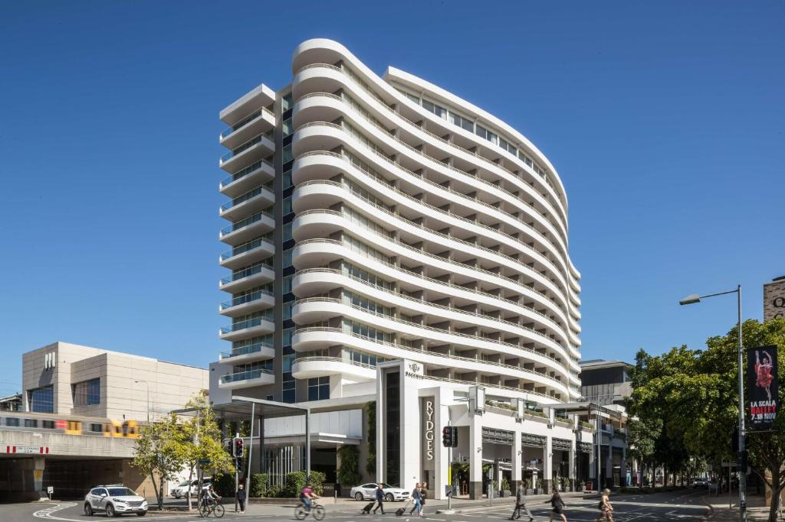
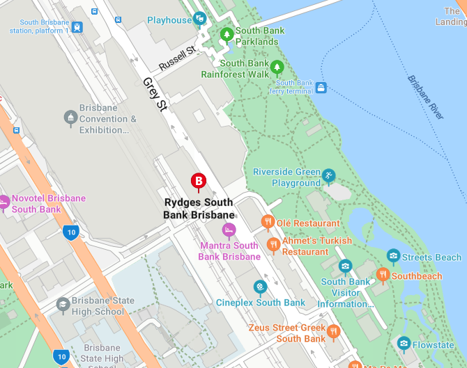
Positive Partnerships would like to acknowledge the Turrbal and Yuggera peoples of the lands where this meeting will take place. We pay respect to elders past and present.
We're excited to welcome you to our gathering, collaborating with the Autism CRC as we consolidate the new content for Phase 5. It's a truly special opportunity to have our First Nations Reference Group, Multicultural Collaboration Group, Autistic Advisory Group, Autism CRC and Positive Partnerships staff all together in one space – to learn, share, and enjoy each other's company.
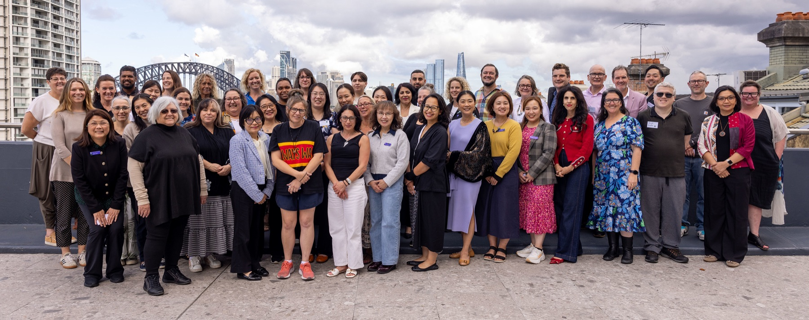
South Bank and the surrounding areas of Brisbane are located on the traditional lands of the Turrbal and Yuggera (Jagera) peoples, who have lived along the Brisbane River for thousands of years. Known traditionally as Meeanjin, meaning "place of the blue water lilies," Brisbane was an important gathering place where Aboriginal communities met for trade, cultural activities, ceremonies, and the sharing of knowledge.
Today, South Bank remains an important place for recognising and celebrating First Nations culture. Within walking distance of Rydges South Bank are several significant cultural sites including:
Our meeting will take place at the Rydges Hotel in South Bank, Brisbane, a stunning location close to the banks of the Brisbane River. You'll be just a short walk or ferry ride from some of the city's most beautiful and iconic spots – South Bank Parklands and lagoon, across the Neville Bonner Bridge into the city the Botanic Gardens or a ferry ride to Howard Smith Wharves.
You can find out more about Rydges South Bank at rydges.com/accommodation/brisbane-qld/brisbane-south-bank.
We will meet and work with members of the Autism CRC on Monday, Tuesday and Wednesday. Raymond, the therapy dog will also be in the working space with us; off lead. Please let your Positive Partnerships contact person know if you have any concerns about this or reach out to Emma Dresens on the days.
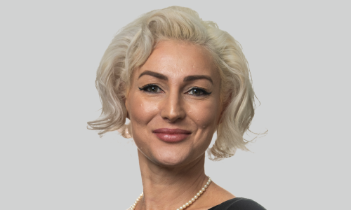
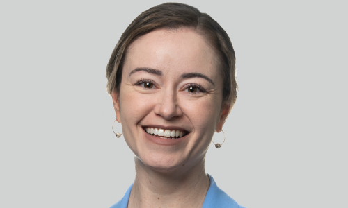
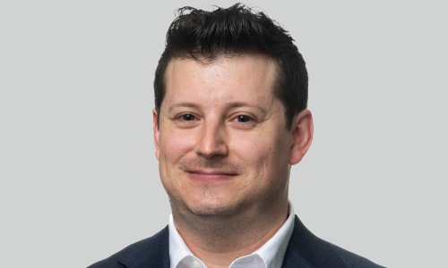
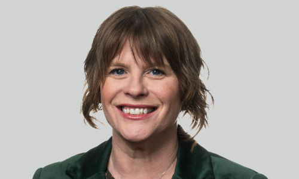
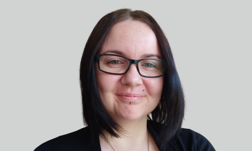
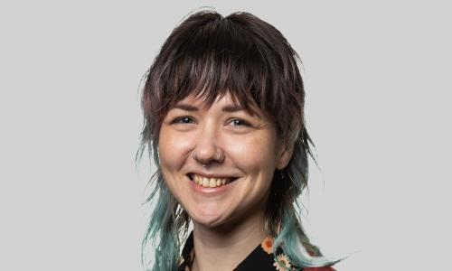
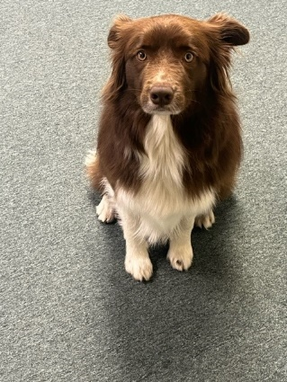
We begin on Monday with those in attendance coming together to learn more about the art of facilitation with Kerry Bissaker. This day was optional, so not all group members will be attending on Monday.
Dr Kerry Bissaker is an adjunct Associate Professor at Flinders University following 28 years of research and teaching in education with a specific focus on designing and evaluating professional learning for educators in the fields of autism and inclusive education. She has successfully supervised several doctoral candidates researching autism and the lived experiences of autistic adolescents.
Tuesday and Wednesday will look, sound and feel a lot different to our last collaboration, and we'll experience a different way of working as we collaborate with the Autism CRC.
We will be following different timelines for each program and we will be using multiple ways of working to share and record reflections and considerations on each concept.
The purpose of the meeting is to share the updated parent/carer and professional learning content overview and contribute to the development of activities for each of the workshop models. There will be time for the First Nations Reference Group and Multicultural Collaboration Group to focus on the programs they support.
For some of the activities we will be seated in mixed groups from the First Nations Reference Group, Autistic Advisory Group, Multicultural Collaboration Group and Positive Partnerships team. At other times you will be working with your specific group.
At the workshop you can wear a coloured dot to show others how you'd like to communicate:
Remember, if your communication preferences change during the workshop, you can change your dot colour.
| 9:00am | Acknowledgment of Country |
|---|---|
| 9:05 – 9:15am | Housekeeping and introductions |
| 9:15 – 10:45am | Kerry Bissaker Facilitation Skills |
| 10:45 – 11:15am | Morning Tea |
| 11:15am – 12:30pm | Kerry Bissaker Facilitation Skills continued |
| 12:30 – 1:15pm | Lunch |
| 1:15 – 2:30pm | Kerry Bissaker Facilitation Skills continued |
| 2:30 – 2:45pm | Afternoon Tea — Movement/brain break |
| 2:45 – 3:45pm | Kerry Bissaker Facilitation Skills continued |
| 3:45 – 4:00pm | Wrap up and finish |
Optional: 6pm meet in lobby for dinner or a drink at the hotel
| 9:00 – 9:50am | Welcome to Country – Uncle Steven Introductions and welcome |
|---|---|
| 9:50 – 10:00am | Connection activity |
| 10:00 – 10:45am | Autism CRC Collaboration introduction: overview of the project; co-design process; expectations; shared purpose for the 2 days; brief walk through of current content |
| 10:45 – 11:00am | Movement break/brain break activity brainstorm |
| 11:00 – 11:30am | Morning Tea |
| 11:30am – 1:00pm | Parent Carer content: learning activity, led by PP staff at tables |
| 1:00 – 1:45pm | Lunch |
| 1:45 – 3:00pm | Professional Learning Activities
|
| 3:00 – 3:15pm | Afternoon Tea — Brain break/movement break |
| 3:15 – 4:00pm | Professional Learning Activities
|
| 4:00pm | Conclude the day |
Optional Dinner: For anyone who is interested — Hotel Terminus
Meet in lobby at 6pm or make own way to restaurant, 73 Melbourne St, South Brisbane, by 6:15pm
| Prior to 9:00am | Check out |
|---|---|
| 9:00 – 9:15am | Acknowledgement of Country Recap of previous day |
| 9:15 – 10:30am | Professional Learning Activities
|
| 10:30 – 11:00am | Morning Tea |
| 11:00am – 12:30pm | Professional Learning Activities
|
| 12:30 – 1:15pm | Lunch |
| 1:15 – 2:15pm | Showcase/sharing of what has been created |
| 2:15 – 2:30pm | Connection activity |
| 2:30 – 3:00pm | Wrap up and conclude |
| 3:00pm onwards | Taxi to airport for those flying Travel home |
If you are travelling via plane, you will receive digital CabCharge passes via SMS that you can upload to your phone wallet. You will receive enough passes to get you from your home to the airport, to the event and back home again. Your key contact in Positive Partnerships will contact you to make sure everything runs smoothly. You may be asked to travel with a Positive Partnerships colleague who is arriving at a time similar to yours. Your key contact will speak to you in advance about this.
Another option, if you prefer, is to take the train. Trains run direct from the airport to South Brisbane Station and cost $23.30 (less if booked online in advance), paid via credit card. Follow signs in the airport to the platform and board the AirTrain heading to the Gold Coast – you will not have to change trains.
The closest train station is South Brisbane Station. Upon exiting the station, you will see the Queensland Performing Arts Complex. Turn right onto Grey Street. Walk approximately 300 metres along Grey Street; the hotel is on the same side as the station. It's about a 4-minute walk from South Brisbane Station to the hotel.
If you live in Southeast Queensland and are driving to the event, Positive Partnerships will cover the cost of your parking.
Rydges have valet service parking – if you are driving to the hotel, park in the main driveway and advise the concierge of your name and that you are attending the Phase 5 Content Workshop. They will do the rest!
Where to enter: on the corner of Glenelg and Grey Streets, enter off Glenelg Street.
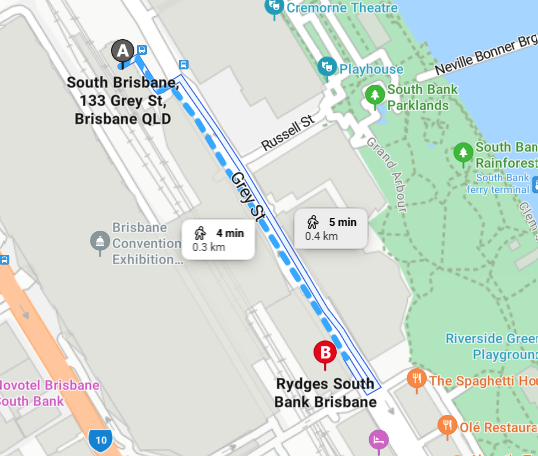
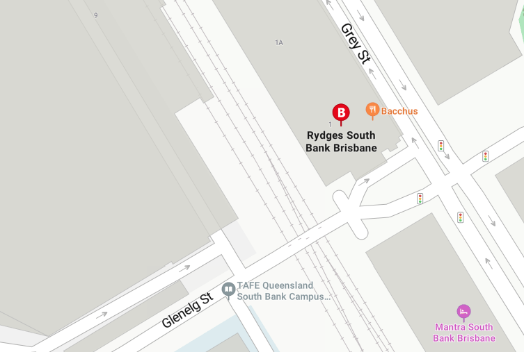
If your travel plans change or you have any questions about the event, please get in touch with your contact person:
Just a reminder that if you haven't already given your dietary preferences to your Positive Partnerships contact, please do so. This will make sure we have suitable options available for you at the event.
There are many places to eat close to the hotel, mainly along Grey Street, Little Stanley Street and in South Bank Parklands. Some suggestions are:
Open 7:00am – 10:00pm
(07) 3364 0800
Shop 6C Little Stanley Street, South Bank
Open 11:30am – 3:00pm and 4:00 – 9:00pm
(07) 3130 0445 — mapame.com.au/menu
South Bank Parklands, Shop 31BD
Open 7:15am – 7:00pm
(07) 3846 7380 — riversidecafeandbar.com
13/14 Little Stanley St
Open 11:00am – 9:00pm
0407 778 752 — zeusstreetgreek.com.au
111 Melbourne St, South Brisbane
Open noon – 3:00pm and 5:00 – 9:00pm
(07) 3255 2075 — chuthephat.com.au
73 Melbourne Street, South Brisbane
Open 11:00am – 10:00pm
(07) 3131 8951 — hotelterminus.com.au
Take-away options include Nando's, Guzman y Gomez, Grill'd and McDonald's — all located on Grey Street; turn right as you head out of the CBD entrance.
Rydges South Bank Brisbane — 9 Glenelg Street, South Bank, Brisbane
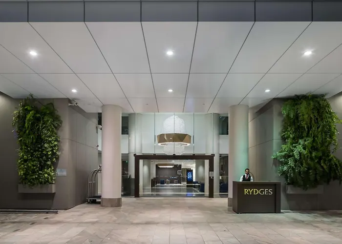
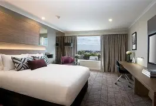
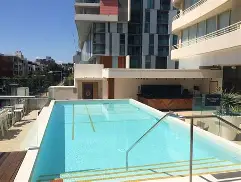
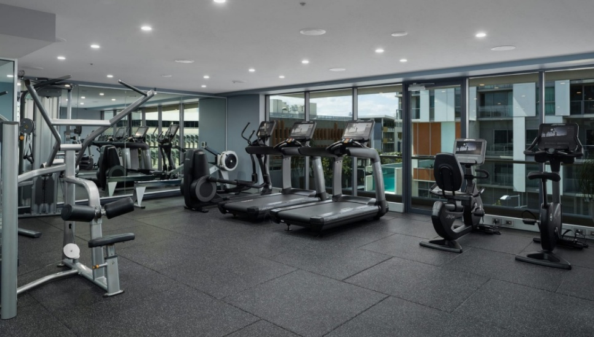
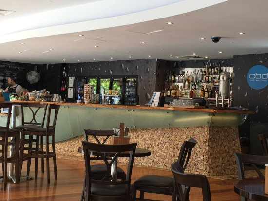
We will be meeting on the 12th floor in Rooftop South. There will be breakout and quiet spaces available.
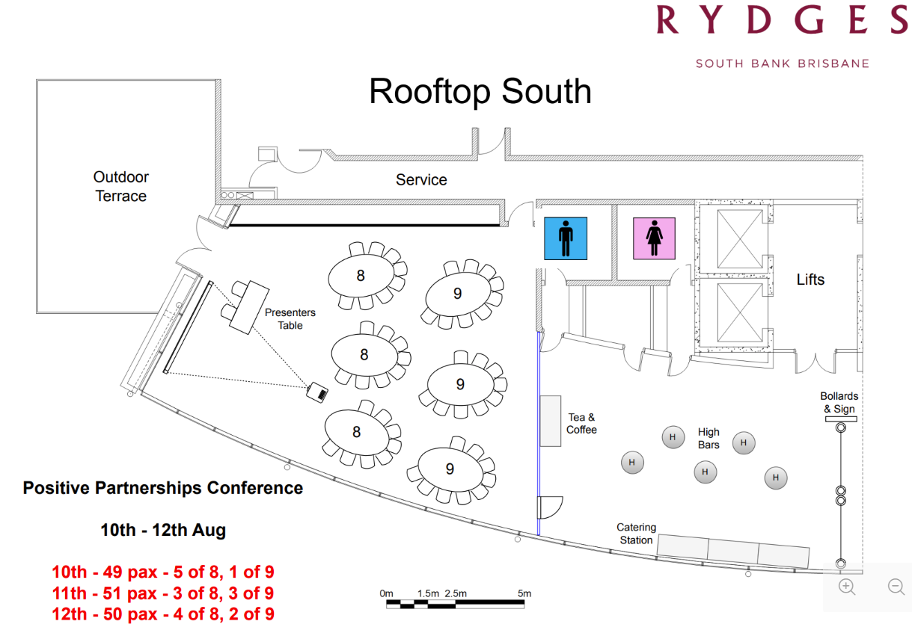